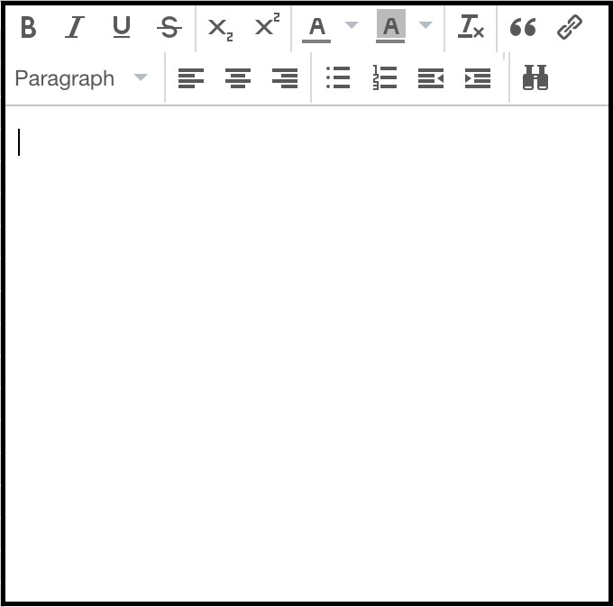

Adding a Child Note
Add a child note to an existing item in the library.
Child notes are notes that belongs to a specific item.
- Select an item in the center pane.
- Click the New Note button
 on the top of the center pane.
on the top of the center pane. - Select Add Child Note.
- Type text into note
- Text in notes will automatically save as you type
A note will be created as an attachment to the item, and a note editor will appear in the right-hand pane.